The DAISY Pipeline is a framework for XML- and DTB-related transformations. As such, it can be employed in various contexts, relating to both content creation and distribution.
The actual functionality within the DAISY Pipeline is provided by several collaborating organizations. Most contributions are open source, and reside at the DAISY Pipeline Sourceforge project.
The DAISY Pipeline fully depends on the spirit of collaborative sharing. Remember, you can contribute to the future of the Pipeline in many ways:
If you want to contribute, contact any of the project participants, or send an email to markus.gylling-at-tpb.se.
See also the Making a feature request and Reporting a bug sections below.
If you read this document before having installed the Pipeline GUI, please refer to the Pipeline Installation Instructions.
The first time you launch the Pipeline GUI, a Welcome Screen is opened.
The welcome screen contains links to subpages which contain introductory information, and is intended primarily as a help for first time users.
The second time you launch the Pipeline GUI, the welcome screen is not automatically shown. If you want to get back to this screen, you can use the Welcome menu item in the Help menu.
To close the Welcome Screen, select the Navigation item in the Window Menu, select Show System Menu, and then select close. Alternatively, click on the close button in the top left corner of the Welcome screen.
As you launch the Pipeline the first time, you should follow the links given in the welcome screen, and read the information given there. In particular, you should go to the Preferences Dialog to set the paths for temporary file storage, and the location of external executables. Read more about this in the Installation document.
The Pipeline Graphical User Interface (GUI) uses the terms Perspective and View to refer to different parts of the interface.
A Perspective is more or less synonomous to a main window. This main window contains subsections, referred to as Views.
The DAISY Pipeline GUI contains two Perspectives; the Job (main) Perspective, and the Documentation perspective. The Job Perspective in its turn contains several views, which you can read more about below in the Jobs Perspective section.
There are several ways to navigate among the different Perspectives and Views.
To switch between perspectives, select Open Perspective in the Window menu, and select the Perspective you wish to open.
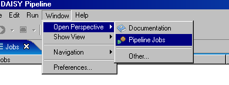Alternatively, you can make use of the Perspective Icons in the top right corner of your current Perspective.

To open or set focus on a certain view, select the view you want in the Show View in the Window menu.
You can also cycle between the different Perspectives and Views by using the Window menus Navigation entry. The cycle command also has keyboard shortcuts.
The three terms Script, Job and Transformer are central to understanding how the DAISY Pipeline works.
The Jobs Perspective is the main window of the DAISY Pipeline GUI. Here, you configure and add jobs, run them, and monitor the progress.
The Jobs View can be thought of as a Job queue. Each Job added is available as an entry in this view. You can expand the Job to review details of the job configuration.
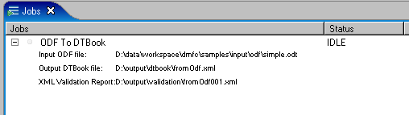Depending on the state of a job, the status column of the Jobs view will flag the status as IDLE, RUNNING, COMPLETED, or FAILED.
If you are creating a queue of Jobs, you can reorder the queue via the arrow buttons in the top right corner of the Jobs view.
The Run menu item contains entries for running all or the currently selected job. The same applies to the cancel command.
You can also use the Run and Cancel buttons at the top left part of the Jobs View.
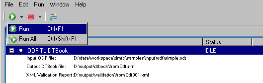To delete one or several jobs in the queue, select the job(s), and use the delete key on your keyboard, or the delete button at the top right part of the Jobs View.
You can also clear all finished jobs by using the clear all finished jobs button at the at the top right part of the Jobs View.
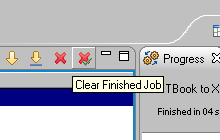Jobs are added through a Wizard. The New Job Wizard can be launched either by selecting the New... Pipeline Job item in the File menu, or by pressing the Wizard button at the top left part of the Jobs View.
The wizard is made up of a two-step process; first, select which Script you want to run, and then configure the Script parameters.
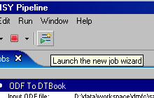If you are not acquainted with the Scripts provided and the functionality they offer, it is recommended that you first spend some time browsing the Script documentation in the Documentation Perspective.
The first page of the Wizard provides a tree view of the available scripts. When you select a script, a tooltip (also provided in the top bar of the page) will give a brief description of the Script functionality.
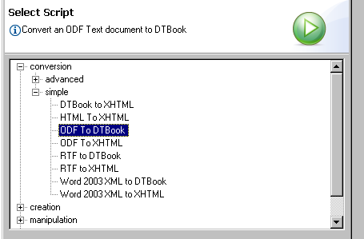In the lower left of each of the first Wizard pages, a link to Script Help is provided. Detailed information about the Scripts, file requirements, outputs and so on is provided. This information is also available in the "Scripts" section of the Documentation Perspective.
To toggle between the script selector and the browser view, use the F6 key.
When you have found the script you want to run, press the next button.
The second page of the wizard contains all configuration options. The options are shown in two groups: Required parameters (needed for the script to be runnable), and optional parameters (that can be set if needed, but the script will run even if they are not explicitly set). Optional parameters often have default values that should work fine under normal circumstances.
As you select a parameter, a tooltip (also provided in the top bar of the page) will give a brief description of the parameters meaning. If this information does not suffice, please refer to the Script documentation in the Documentation Perspective.
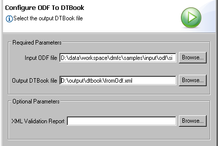Once all required parameters have been set, the Finish button will become enabled. Press Finish to finalize the Wizard and return to the Jobs view. The Job has now been added to the Jobs queue. To run the job, use the run command.
While a job is running, you can monitor the progress in the Progress View. The Progress View contains one entry for each Transformer that the script contains.
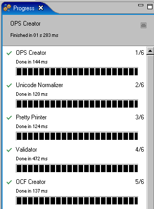The messages view lists the messages generated by the DAISY Pipeline while the Jobs are running. Some of these messages are informational only, for example, confirming that parts of the Job have been successful. However, other messages are critically important, and notice should be taken. For example, if a job fails, the reason for the failure will be provided here. Similarly, when a Job includes validation, the result of the validation will be reported here.
There are four main types of messages:
The message type is listed for each message in the right column of the Messages table view.
Given the wide variety of functionality within the Pipeline, there is a vast amount of messages that can be emitted. For this reason, it is not possible to give explanations of all messages in this manual. If you recieve messages that you find difficult to interpret, you are suggested to ask for help on the DAISY support list.
Below is a list that explains some of the messages. (This list will be expanded as time goes on.)
Failed deleting temporary resource
The Pipeline uses temporary directories to store data during job execution. Generally, the temporary directory that is set in the Paths section of the Preferences dialog is used.
However, some scripts use a temporary subdirectory of your output directory to store temporary data. In some instances (such as when this directory is in use by another application), the Pipeline can not delete these files.
The files are typically stored in a subdirectory of your output directory called "pipeline__temp". If the "Failed deleting temporary resource" message has appeared, you can manually delete this folder after the job has finished.
null
An admittedly nihilistic message that, if it is of type ERROR, indicates that you have encountered a bug.
If the problem is confirmed to be a bug, you should open the Error Log, save the information there to a log file, and report the bug to the Pipeline bugtracking system, providing the log file as an attachment.
Messages can be filtered (meaning: to show or not to show messages of a certain type). Messages can also be grouped by type and per Job.
The filtering and grouping options are available in the right top corner of the Messages View. There is a dedicated icon for filtering each message type.
You can also access this functionality via the View menu in the Messages Tool Bar (appearing as a downwards white triangle icon). Alternatively, in the Window menu's Navigation entry, select the Show View Menu command while the Messages View has focus.
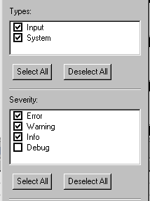By selecting the export messages option in the top right corner of the Messages View, you can save messages as a log file.
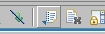The Error Log is not shown by default. To show it, select Show View..., Error Log from the Window menu item.
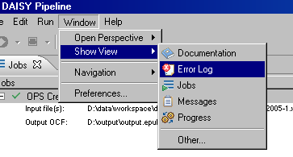Under normal circumstances, you will not need to engage in the information in the Error Log. The information here is mainly intended for developers trying to fix a bug, or systems administrators trying to solve a problem.
The documentation perspective contains three different categories of documents:
As you select a document in one of the tabs in the document list, the document will load in the browser window in the right part of the screen.
To toggle between the documentation tree view and the browser view, use the F6 key.
The Preferences Dialog can be accessed via the Preferences entry in the Window menu item.
This dialog contains various settings for configuring the appearance of the GUI. You can also modify keyboard shortcuts here.
The most important part of this dialog is the Paths section. You can read about what the different entries here mean in the Installation document.
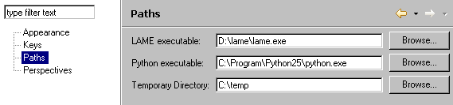The DAISY Pipeline can be updated by applying zipped patches provided by the development team. This feature is available via the Updates... entry in the Help item of the main menu bar.
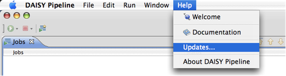The wizard will ask you to select the ZIP file containing the update patch, and if the patch is valid it will show its content along with some textual description. Then, click on the "Finish" button to apply the software update.
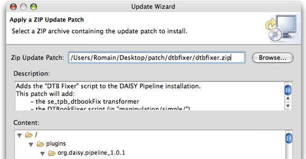Note that update patches will usually consist in small software updates (such as the import of new Pipeline scripts, documentation files, etc). Greater changes will probably require a new installation and will not be available as update patches.
To make a feature request, please sign on to SourceForge, and use the DAISY Pipeline Feature Request tracker.
If you want to discuss a feature before making a request for it, you may subscribe to the DAISY Pipeline interest group emailing list. To do this, please contact markus.gylling-at-tpb.se.
To report a bug, please sign on to SourceForge, and use the DAISY Pipeline Bug tracker. If you are sure this is a bug that pertains to the GUI, please use the DAISY Pipeline GUI Bug tracker. If you are in doubt, use any of the trackers, and the administrators will make sure the bug ends up in the right place.
If you need help or have some other type of question, you should primarily use the DAISY Consortium Training and Technical Support emailing list. Information on how to subscribe to this list is available on http://www.daisy.org/get_involved/join-lists.asp.